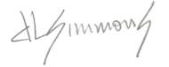

David L. Simmons Biography/CV
Born in 1952, the fourth child of a minister, David L. Simmons spent his first two years in Birmingham, Alabama. Then the family moved to Magnolia Springs, Alabama on the Gulf Coast, a place the family had visited many times even before his birth. At this early age, a strong affection was born for the sandy soil, long-leaf pines, and hot, salty summer breezes of coastal Alabama. Between the age of seven and twelve he moved with his family to Shreveport, LA and Richmond, VA, but then returned home to south Alabama and has never left.
From a very early age Simmons was interested in how things worked, and in making and creating things. He received his first oil paints on his fifth birthday on a trip to Mobile, AL at a dusty little art shop downtown. A love of the aroma of linseed oil and turpentine has been constant since that day.
After spending 5 years working his way through college, he graduated from the University of South Alabama in 1977 with a Bachelors of Fine Arts degree with concentrations in studio painting and printmaking. During that time he won a scholarship from the Mobile Art Patrons League. After working months on his Pre-Thesis and Senior Thesis show, while being advised by Dr. James Kennedy and Lee Hoffman, he was awarded an unanimous "A" by the Thesis Committee. Since college, Simmons has worked in many mediums including painting, colored-pencil, mixed-media, cast-paper, paper-making, book-binding, sculpture, and even designing and building furniture. For many he is known for his masterful serigraphs with as many as 80 screens and over 140 colors; one of only a few to use the "relief print transfer" method in his work. He is also known for his cast-paper reliefs developed by the artist and called "Mixoglyphs" to represent this unique new medium.
Simmons has been an artist for more than four decades, placing artwork in countless homes, businesses, galleries and museums here and abroad, and garnering over 250 awards. He began exhibiting professionally in 1976 even before graduation from college. Recently, his work has been executed in a unique combination of mixed media including colored-pencil, acrylic paint, and lacquer, along with oil and acrylic paintings on canvas and wood panels. And as always, his work is founded in an appreciation of his coastal Alabama surroundings. Simmons comments, "I enjoy exploring that narrow territory between the figurative and the abstract where things are necessarily reduced to their essence. Even when painting recognizable objects, the abstract elements of form, line, and color are the more important elements to me." Simmons' unique vision of the world is still expanding and developing.
Simmons' brainchild "ArtStreamLIVE" was developed with long time artists and friends, Kurtis Thomas and Charles Smith as an interactive fine arts Webcast promoting all of their artwork and providing the public an interactive venue to communicate directly with the artists through the streaming live video, website, live-email, phone, and chat screen.
For more information about David Simmons or to view more examples of his work please see http://artstreamlive.com and http://www.facebook.com/simmonsfineart.
--
CV - abridged
Awards - Over 250 since 1979
Education
Born in 1952, the fourth child of a minister, David L. Simmons spent his first two years in Birmingham, Alabama. Then the family moved to Magnolia Springs, Alabama on the Gulf Coast, a place the family had visited many times even before his birth. At this early age, a strong affection was born for the sandy soil, long-leaf pines, and hot, salty summer breezes of coastal Alabama. Between the age of seven and twelve he moved with his family to Shreveport, LA and Richmond, VA, but then returned home to south Alabama and has never left.
From a very early age Simmons was interested in how things worked, and in making and creating things. He received his first oil paints on his fifth birthday on a trip to Mobile, AL at a dusty little art shop downtown. A love of the aroma of linseed oil and turpentine has been constant since that day.
After spending 5 years working his way through college, he graduated from the University of South Alabama in 1977 with a Bachelors of Fine Arts degree with concentrations in studio painting and printmaking. During that time he won a scholarship from the Mobile Art Patrons League. After working months on his Pre-Thesis and Senior Thesis show, while being advised by Dr. James Kennedy and Lee Hoffman, he was awarded an unanimous "A" by the Thesis Committee. Since college, Simmons has worked in many mediums including painting, colored-pencil, mixed-media, cast-paper, paper-making, book-binding, sculpture, and even designing and building furniture. For many he is known for his masterful serigraphs with as many as 80 screens and over 140 colors; one of only a few to use the "relief print transfer" method in his work. He is also known for his cast-paper reliefs developed by the artist and called "Mixoglyphs" to represent this unique new medium.
Simmons has been an artist for more than four decades, placing artwork in countless homes, businesses, galleries and museums here and abroad, and garnering over 250 awards. He began exhibiting professionally in 1976 even before graduation from college. Recently, his work has been executed in a unique combination of mixed media including colored-pencil, acrylic paint, and lacquer, along with oil and acrylic paintings on canvas and wood panels. And as always, his work is founded in an appreciation of his coastal Alabama surroundings. Simmons comments, "I enjoy exploring that narrow territory between the figurative and the abstract where things are necessarily reduced to their essence. Even when painting recognizable objects, the abstract elements of form, line, and color are the more important elements to me." Simmons' unique vision of the world is still expanding and developing.
Simmons' brainchild "ArtStreamLIVE" was developed with long time artists and friends, Kurtis Thomas and Charles Smith as an interactive fine arts Webcast promoting all of their artwork and providing the public an interactive venue to communicate directly with the artists through the streaming live video, website, live-email, phone, and chat screen.
For more information about David Simmons or to view more examples of his work please see http://artstreamlive.com and http://www.facebook.com/simmonsfineart.
--
CV - abridged
Awards - Over 250 since 1979
- Best of Show: William Station Day Juried Show; Atmore, AL; 2010
- First Place, Category: Sunfest; West Palm Beach, FL; 1990
- First Place, Category: Eastern Shore Art Academy Juried Show; Fairhope, AL; 1990
- First Place, Category: Eastern Shore Art Academy Juried Show; Fairhope, AL; 1989
- Best of Show: Grand Festival of Art; Point Clear, AL; 1989
- Best of Show: National Shrimp Festival; Gulf Shores, AL; 1989
- Best of Show: Art and Jazz Festival; Destin, FL; 1989
- Best of Show: Pleasure Island Art Assn. Show; Gulf Shores, AL; 1986
- First Place, Category: Eastern Shore Art Academy Juried Show; Fairhope, AL; 1984
- First Place, Category: Eastern Shore Art Academy Juried Show; Fairhope, AL; 1981
- OUTSIDE IN: 40 Years of Acquisitions - Acquisitions by Art Patrons League for Mobile Museum of Art Permanent Collection.
- Art.... Continued. - The Artist's Place, Mobile, AL; 2013
- Mixoglyph - Award Prizes for Spring Fever Chase, Fairhope, AL., 1992
- Fine Art: The Best of Mobile, Fine Arts Museum of the South; Mobile, AL; 1990
- On and Off the Wall, Elements of Change; w/Tim Weber, Upham Gallery, Mobile, AL; 1990
- Group Show: The Art Who Gallery; Ocean Springs, MS; 1990
- Group Show: Southern Printmakers; Main Ave Pottery & Gallery; Northport, AL; 1989
- L.A. 5 - Five Lower Alabama Artist, Main Ave Pottery & Gallery; Northport, AL; 1989
- 10 Artists, University of S. Alabama, Townhouse Gallery, Mobile, AL; 1989
- One-Man Show, Tacon Station Gallery; Mobile, AL; 1989
- One-Man Show, Wolff Gallery; Mobile, AL; 1985
- One-Man Show, Mercy Medical Gallery; Daphne, AL; 1989
- One-Man Show, The Little Gallery, Mobile, AL; 1983
- One-Man Show, Eastern Shore Art Assn. Gallery; Fairhope, AL; 1977
- · Founder and Director at ArtStream LIVE, a Webcast, with Charles Smith and Kurt Thomas.
- 1998 to present: Owner, D.L. Simmons & Company Church Organs;
- Representing Phoenix Organs in the Southeast US.
- 2008 to present: Return to actively producing and exhibiting art.
- Founder/Owner, Caribbean Cottage Art Gallery, Robertsdale, AL; 1990-1993
- Member of the Board of Advisors, Bay Area Arts Council; Fairhope, AL; 1988-1990
- Member of the Board of Directors, Bay Area Arts Council; Fairhope, AL; 1988-1989
- Instructor, Papermaking, Eastern Shore Art Academy, Fairhope, AL; 1989
- Instructor, Papermaking, Mobile Museum of Fine Arts, Mobile, AL; 1988
- Instructor, Printmaking, Eastern Shore Art Academy, Fairhope, AL; 1985-1986
- Juror, National Shrimp Festival Juried Art Show.
- 1976 through 1997 - Full-time Artist Exhibiting from Miami to Michigan and from Virginia to St, Louis.
- Juror, 18th Annual Dauphin Island Juried Exhibition; 1977(Co-juror w/ Lee Hoffman)
- President of S&H Builders, Inc., Fairhope, AL; 1977 - 1982
- Construction Foreman, S&H Builders, Inc.; 1975 - 1979
Education
- Bachelor of Arts in Fine Arts, University of South Alabama; Mobile, AL; 1977
- Scholarship from Mobile Arts Patrons League
- Mobile Museum of Art; Mobile, AL; Permanent Collection
- Mobile Public Library; Mobile, AL; Permanent Collection
- Thomas Hospital; Fairhope, AL; Permanent Collection
- Baton Rouge Arts & Humanities Council; Baton Rouge , LA; Permanent Collection
- Marriot's Grand Hotel; Point Clear, AL; Permanent Collection
- SouthTrust Bank; Dothan, AL; Commission Mixoglyph for Executive Board Room
- John and Cheryl Gwin; Private Collection
- Barbara Tonsmiere Yonge; Private Collection
- David and Patricia Waddle; Private Collection; Commissioned Mixoglyph
- Dr. and Mrs. Win Stringer; Private Collection; Commissioned Mixoglyph
- Press Register / al.com; November 28, 2010; "Artist Trio Hosts Interactive Webcast"
- Mobile Bay Monthly; November 1990; Vol. V, No. 11 "Leaping Mediums", page 31.
- Eastern Shore Courier; March 14, 1990; Arts & Crafts Edition; Detailed Mixoglyphs.
- Baldwin Press Register; May 21, 1990; Vol. 3, No. 34; "Get to Know David Simmons".
- Baldwin Press Register; May 17, 1990; page 8; "Council Kicks Off Art Season".
- Eastern Shore Courier; October 1987; Lifestyle, "Profession of Dreams".
- Eastern Shore Art Association; 1989 Calendar.
- Art Patrons League Calendar; Cover Art; 1994.


Contents of this website ©2014, David L. Simmons.
All Rights Reserved.
All Rights Reserved.